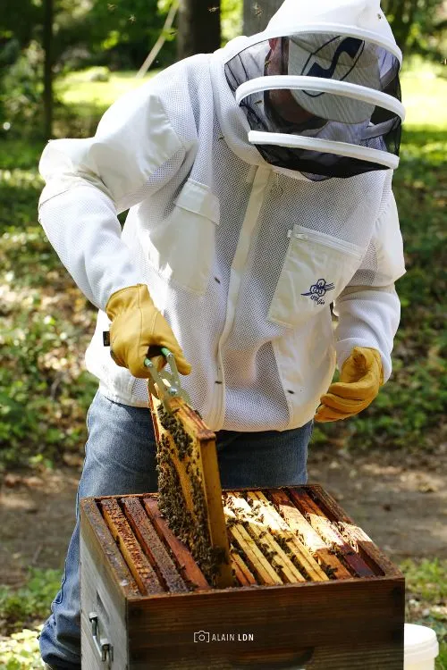

Maîtrisez l'Art de l'Apiculture
Un parcours complet, de l'installation de la ruche à la récolte du miel.
01
Installation et préparation du matériel
- Choisir un emplacement et installer une ruche.
- Préparer une ruche, enrucher un essaim.
- Montage, filage, pose de cire gaufrée dans les cadres.
02
Suivi du rucher, élevage et santé
- Visite des ruches : observations, ouverture, santé, ...
- Prévention de l’essaimage.
- Récupération d’essaims.
- Division de ruches, production d’essaims.
- Production de reines, fécondation, introduction.
- Contrôle et traitements contre le varroa.
- Détection de maladies et traitements.
03
Récolte et opérations d'exploitation
- Pose de hausses.
- Récolte, pose de chasse abeilles, désoperculation, extraction, filtrage, mise en pots.
- Toutes opérations d’exploitation, …